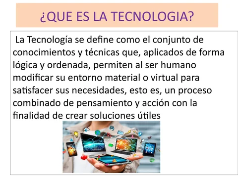

Clase 1
Visto en clases:
En esa clase se dio la bienvenida al curso y se explicaron detalles técnicos de este, como el programa, el cronograma y la metodología de evaluación. Asimismo, se realizaron actividades iniciales para realizar un diagnostico sobre los conceptos que tenían todos sobre ciencia y tecnología.
Lo aprendido:
Aprendi que trabajar en equipos es mas divertido y entretenido hacer los trabajos y mas cuando me toco el dema de proyecto Tecnologia armamentista
